Project 1
Images of the Russian Empire
Colorizing the Prokudin-Gorskii photo collection
Sergei Prokudin-Gorskii captured color photographs by taking three separate exposures of a scene through blue, green, and red filters. The digitized glass plates contain these exposures as three vertically stacked grayscale images. Simply assigning them to their color channels produces colored fringes and doubled features because the exposures are not perfectly aligned.
The goal of this project is to automatically reconstruct a single color image. I split each scan into its three channels, hold blue fixed, and search for the horizontal and vertical shifts that align green and red with it.
This involves two key decisions, outlined below: how to measure the quality of a match (L2 distance vs. NCC) and how to search for the alignment (single-scale vs. multi-scale).
Single-scale alignment results
Offsets (x, y) in pixels, relative to the blue channel.


L2 vs. normalized cross-correlation (NCC)
L2 distance compares pixel intensities directly. For two candidate image interiors A and B, it squares each pixel difference, sums the differences, and takes the square root. A smaller value is better.
Large intensity differences contribute strongly to this score. However, corresponding objects can have different brightness through different color filters, even when their positions are correctly aligned.
NCC subtracts each image’s mean, divides by the magnitude of its centered values, and takes their dot product. Here Ā and B̄ denote the mean intensities, and the images are treated as vectors.
Mean subtraction removes a uniform brightness offset; normalization removes an overall positive contrast scaling. NCC therefore compares relative intensity patterns. Higher correlation is better, so my code minimizes 1 − NCC to use the same minimum-score search as L2.
I chose NCC for its tolerance to these brightness and contrast differences. With single-scale search, L2 and NCC gave identical offsets on cathedral, monastery, and tobolsk. With the same pyramid parameters, however, L2 misaligned cathedral and church while NCC aligned their main features.
Church: matching intensity versus matching position
L2 produced large horizontal shifts and a visibly duplicated church. NCC aligned the building and shoreline. This is consistent with L2’s sensitivity to channel-dependent intensities: broad areas such as sky and water can strongly influence the score. NCC reduces the effect of overall brightness and contrast differences. All offsets below are (x, y), relative to blue.
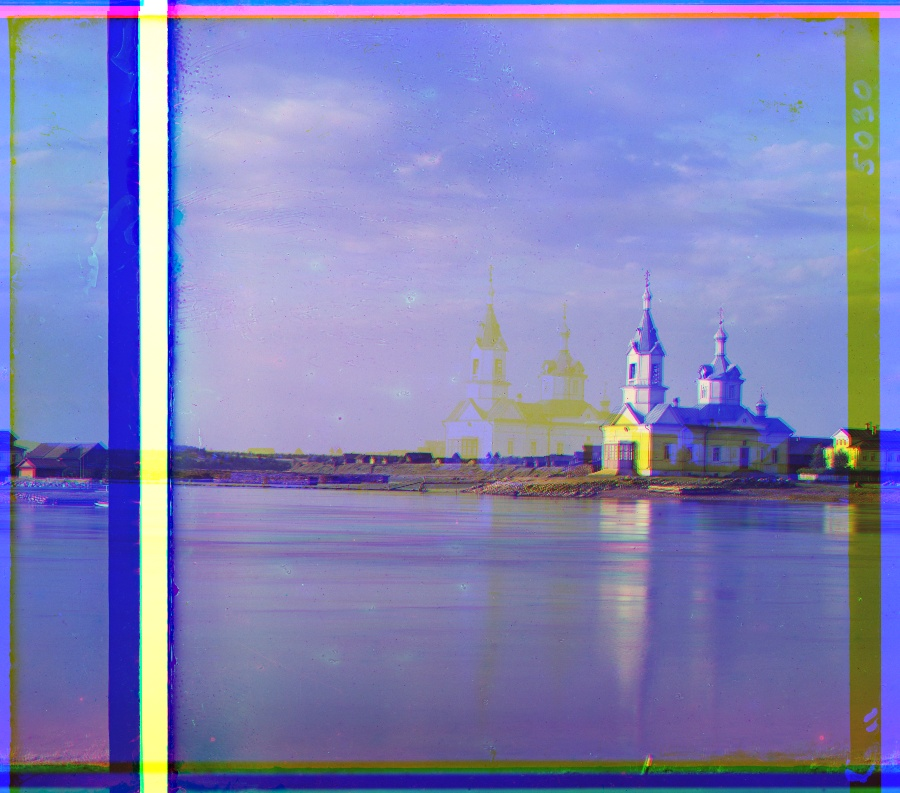
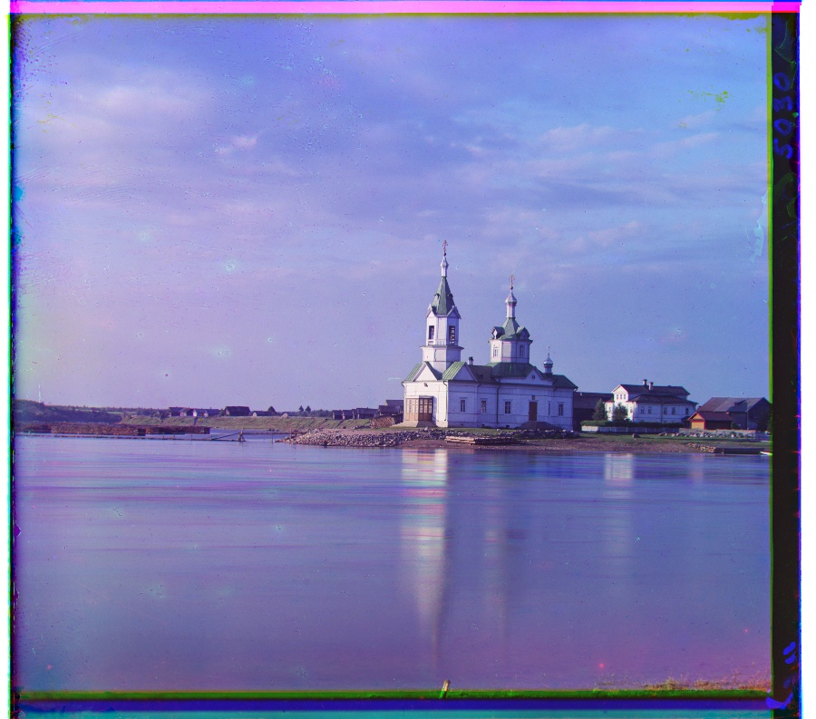
Cathedral: a wrong coarse estimate
Pyramid L2 shifted red by (75, 11), producing displaced red details and color fringes. NCC found (3, 12). Unlike exhaustive single-scale search, the pyramid only refines near its coarse estimate, so an early mistake can leave the correct shift outside the refinement window.
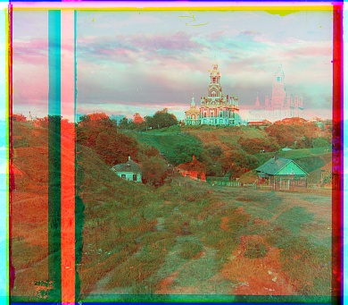

NCC is not invariant to every color-channel difference. In particular, objects can reverse their relative brightness between exposures. Emir’s robe is one example, and his red channel remains misaligned in my NCC results below. Matching gradients or edges would be a possible extension.
Multi-scale pyramid alignment results
Offsets (x, y) in pixels, relative to the blue channel.

{kind=link}
{kind=link}
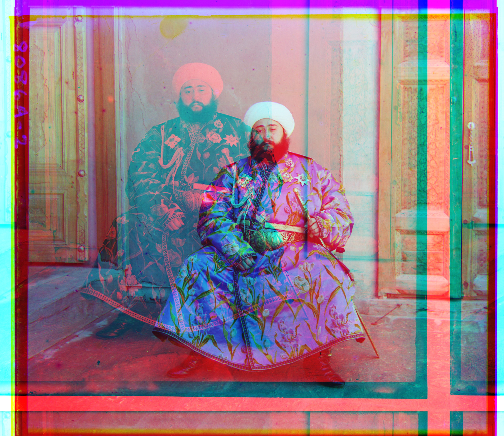

{kind=link}
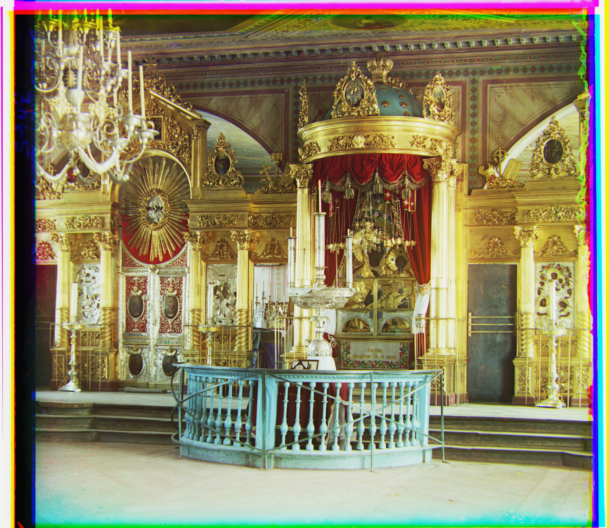
{kind=link}
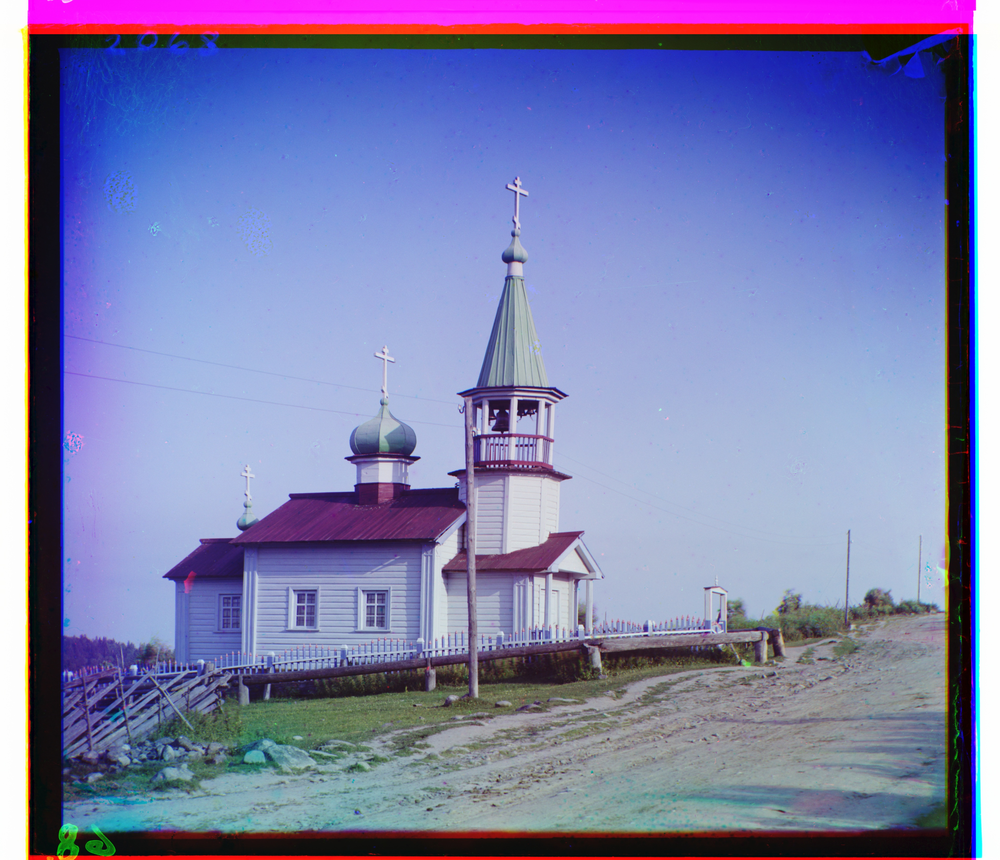
{kind=link}
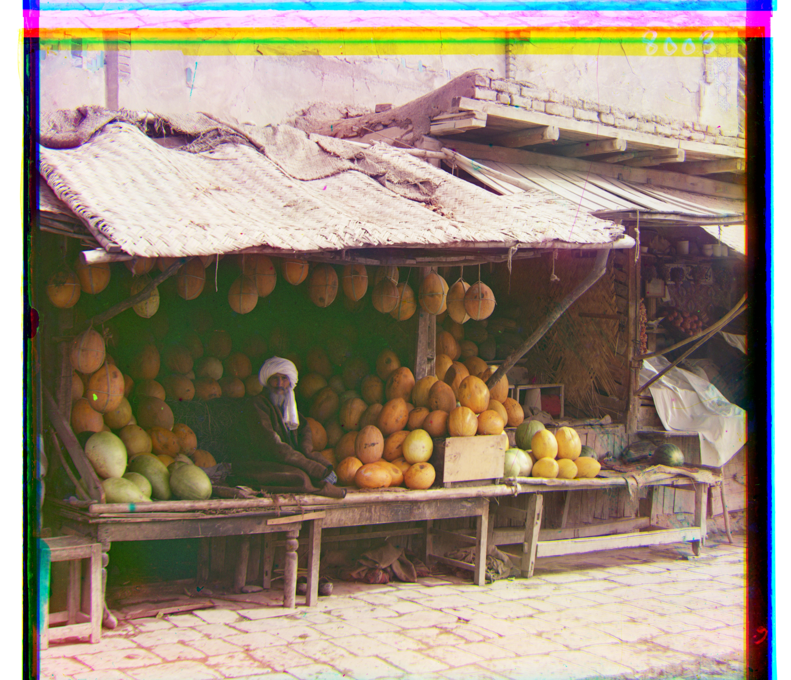
{kind=link}
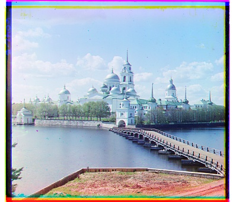

{kind=link}
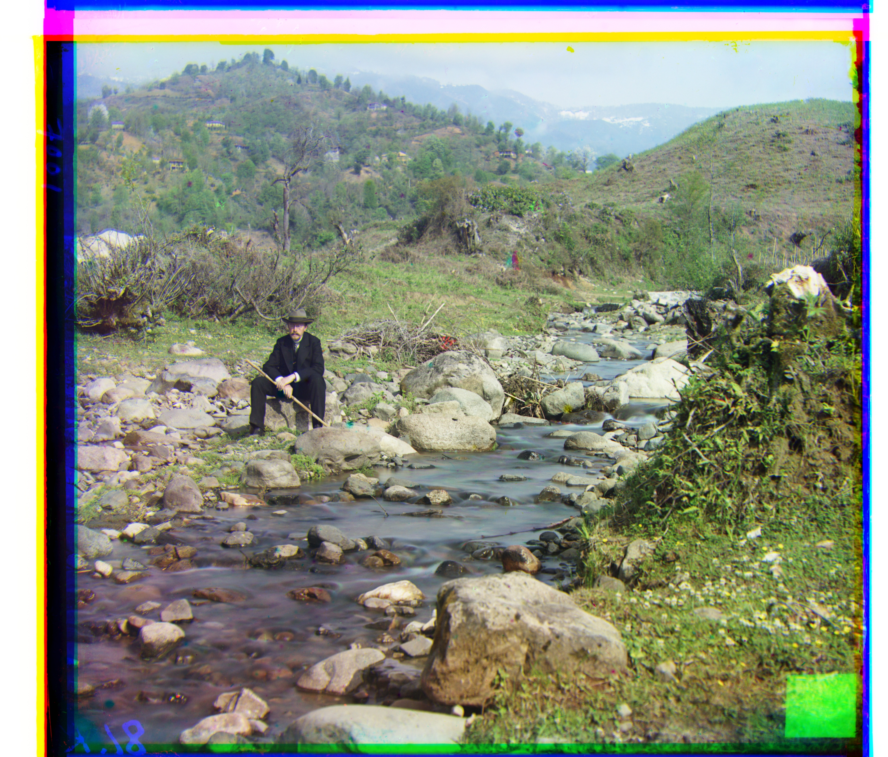

{kind=link}
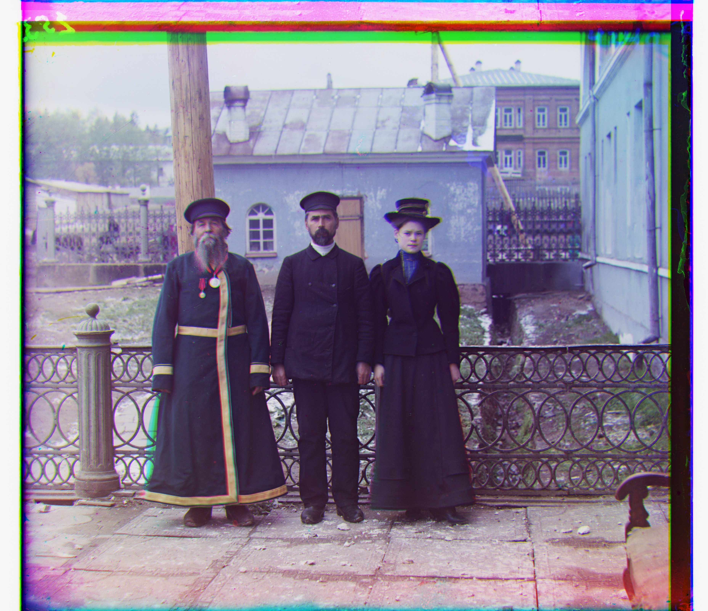


{kind=link}
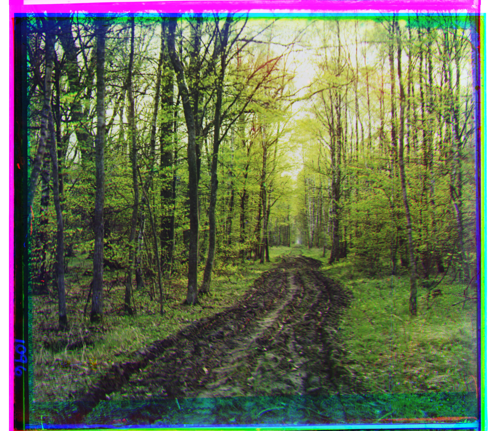
{kind=link}
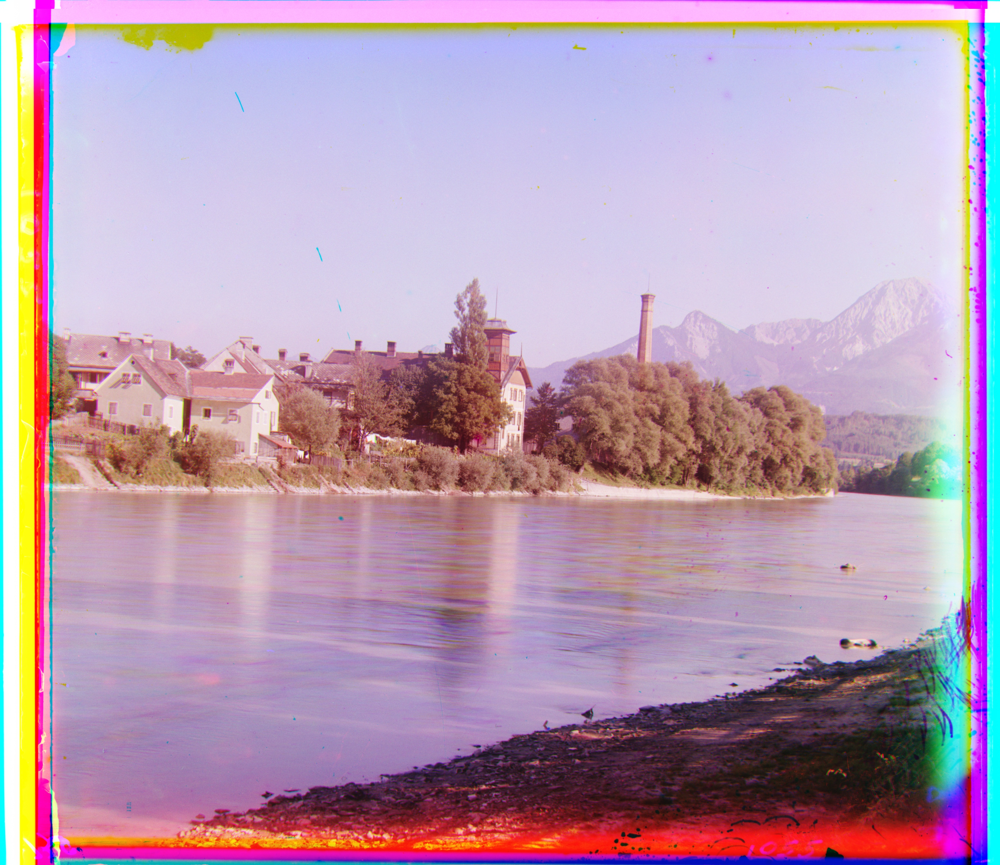
{kind=link}
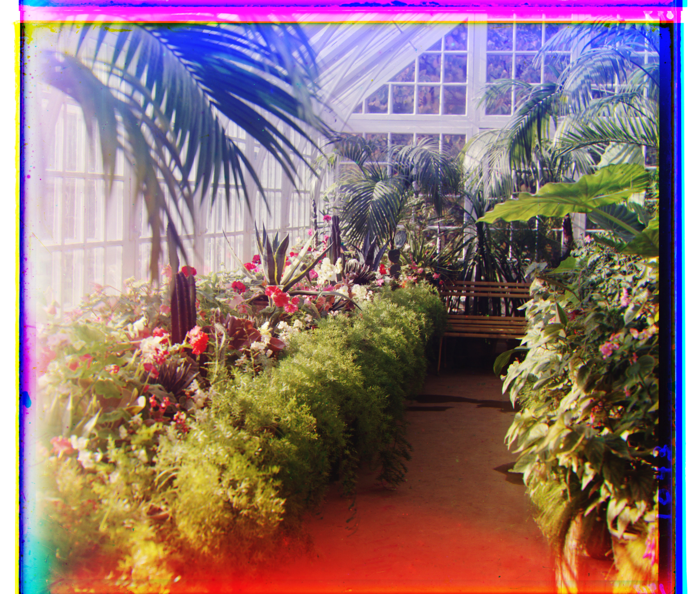
Single-scale vs. multi-scale alignment
Single-scale alignment searches at the original resolution. I try every horizontal and vertical displacement in [−15, 15], giving 961 candidates per channel, and keep the shift with the best score. This works for the small JPEGs, where the required shifts fit inside that window. I exclude a 15-pixel margin when scoring so pixels wrapped by the shift do not affect the match.
Multi-scale alignment handles the larger displacements in the full-resolution TIFFs. Widening the original search would require evaluating many more candidates over millions of pixels. Instead, I recursively halve both images with antialiased resizing (blurs the image before downsampling to prevent fine details from turning into false patterns) until the smaller dimension is below 128 pixels. At this base case, we use naive alignment to find a starting shift, and as these results propagate back up the tree, each function call then refines the estimated shift with a much smaller search window.
At each finer level, I double the estimated shift and refine it within a [−5, 5] window, evaluating only 121 candidates per channel. Both methods reuse the same search function. For pyramid scoring, I exclude 10% photographic borders plus a margin covering the largest total candidate shift, keeping wrapped pixels out and using the same scoring region for every candidate at that level. These crops affect scoring, not the saved image dimensions.
Compiled results
All results use NCC. Offsets are (x, y) in pixels, relative to the blue channel. Click an image name to open its result.
| Image | R (x, y) | G (x, y) |
|---|---|---|
| Cathedral | (3, 12) | (2, 5) |
| Monastery | (2, 3) | (2, -3) |
| Tobolsk | (3, 6) | (2, 3) |
| Image | R (x, y) | G (x, y) |
|---|---|---|
| Cathedral | (3, 12) | (2, 5) |
| Church | (-4, 58) | (4, 25) |
| Emir (red misaligned) | (-483, -181) | (24, 49) |
| Harvesters | (14, 124) | (17, 60) |
| Icon | (23, 89) | (17, 41) |
| Ilemselga | (11, 130) | (7, 40) |
| Melons | (13, 178) | (10, 81) |
| Monastery | (2, 3) | (2, -3) |
| Religious painting | (7, 68) | (3, 28) |
| Self portrait | (37, 176) | (29, 79) |
| Siren | (-25, 96) | (-6, 49) |
| Three generations | (11, 111) | (14, 53) |
| Tobolsk | (3, 6) | (3, 3) |
| Wharf | (-16, 83) | (-7, 15) |
| Liesnaia doroga From the Prokudin-Gorskii collection | (7, 97) | (-32, 37) |
| Na dunaie From the Prokudin-Gorskii collection | (101, 85) | (51, 33) |
| V oranzhereie From the Prokudin-Gorskii collection | (35, 126) | (28, 60) |